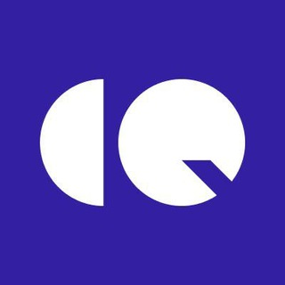

HOT오늘도 글
국내 블록체인·가상자산 전문 매체의 공개 채널입니다.
시황·정책·시장을 기사 형식으로 전하는 공식 채널이라 개인 리딩방과 구분된다.
미디어 속보와 거래소 공지
오늘 읽을 글: 가상자산 글, 창립자·데이터·공지를 나눠 읽는 법
HOT오늘도 글
국내 블록체인·가상자산 전문 매체의 공개 채널입니다.
시황·정책·시장을 기사 형식으로 전하는 공식 채널이라 개인 리딩방과 구분된다.
HOT오늘도 글
국내 가상자산 시황 매체의 공개 채널입니다.
코인니스 공식 뉴스 피드. 사칭 채널이 많아, 확인된 핸들만 넣었다.
HOT오늘도 글3일 연속
국내 거래소 빗썸의 공식 공개 채널입니다. 공지 원문은 이 사이트에 옮기지 않습니다.
빗썸 공식 공지. 업비트와 같이 '사실 확인' 창구로만 쓴다.
HOT오늘도 글3일 연속
국내 거래소 업비트의 공식 공개 채널입니다. 공지 원문은 이 사이트에 옮기지 않습니다.
업비트 공식 공지. 해설이 아니라 입출금·거래지원 사실 확인용으로 고른다.
HOT오늘도 글
국내 가상자산 전문 매체의 공개 채널입니다.
국내 블록체인 미디어 공식 채널. 속보에 원문 링크가 붙어 출처를 따라가기 쉽다.
HOT오늘도 글4일 연속
해외 가상자산·웹3 매체입니다.
크립토와 AI가 겹치는 소식을 자주 다뤄, 국내 코인 속보만 볼 때 빠지는 교점을 본다.
HOT오늘도 글
해외 가상자산 전문 매체입니다.
글로벌 크립토 미디어. 국내 속보와 같은 이슈를 영어로 어떻게 쓰는지 대조할 때 쓴다.
HOT오늘도 글
해외 가상자산 전문 매체입니다.
크립토 전문 매체. 코인데스크와 겹치는 날을 비교해 읽는 용도다.

크립토퀀트(CryptoQuant)오늘도 글
온체인 데이터를 다루는 국내 기업의 공식 채널입니다.
온체인 지표를 직접 언급하는 창구라 미디어 속보와 역할이 다르다. 공개 글은 영어가 많아, 한글 브리핑 뒤 원문으로 간다.
앤드리슨 호로위츠(Andreessen Horowitz)의 암호화폐 리서치 블로그입니다.
벤처캐피털의 크립토 글. 투자사 관점임을 밝히고, 재단·미디어와 나눠 읽는다.
 이더리움 재단(Ethereum Foundation) 블로그
이더리움 재단(Ethereum Foundation) 블로그
이더리움 재단의 공식 공개 블로그입니다.
이더리움 재단 공식 글. 가격 뉴스와 구분해 기술·정책 원문으로 쓴다.
이더리움(Ethereum) 공동 창립자로 공개 정체성이 확인됩니다.
개인 에세이라 매체 속보와 결이 다르다. 빈도는 낮아도 남겨 둔다.
젠슨 황 CEO 복귀에 직장문화 활동가들 책임 기준 문제 제기 이사회는 황의 사임을 만장일치로 수용한 지 닷새 뒤 복귀를 의결했다. 독립 이사들로 구성된 위원회의 조사는 계속된다. #엔비디아 #젠슨황 #직장문화 #이사회 🔗 토큰포스트 기사 원문
파이코인 24시간 1.91% 상승…7일·30일은 하락 하루 기준 가격은 올랐지만 7일·30일 변화율은 마이너스였다. 진행 중인 Pi Next는 20만 USDT 상금과 별도로 최대 2000만 파이의 앱 성장 예산을 제시했다. #파이코인 #파이네트워크 #PiNext #가…
[미 민주당, 폴리마켓 등 트럼프 장남 연계 기업 특혜 의혹 조사] 미국 민주당 소속 제이미 라스킨 하원의원이 트럼프 대통령의 장남 도널드 트럼프 주니어가 시니어 파트너로 참여 중인 벤처캐피털 1789캐피털과 관련해 이해충돌 가능성을 조사하고 있다고 블록비츠가 밝혔다…
[미국 정부, 30.6만 BTC 보유...주요국 중 최대] 아캄 데이터에 따르면 주요 8개국 정부 관련 기관이 보유한 암호화폐가 총 237억9000만 달러에 달하는 것으로 집계됐다. 미국 정부의 보유액이 186억1000만 달러로 가장 많았으며, 이 중 비트코인 보유량…
질리카(ZIL) 담보인정비율 30%→10%…바이낸스 27일 낮춘다 교차마진·통합계정에서 질리카를 담보로 인정하는 비율을 조정한다. 작업은 한국시간 27일 오후 3시 시작해 30분 안에 끝날 예정이다. #바이낸스 #질리카 #담보인정비율 #교차마진 🔗 토큰포스트 기사 원문
["BTC 장기 보유자 투매 심화...바닥 형성 신호"] BTC 장기 보유자들의 손절매가 지난 6월 저점 당시 수준으로 심화됐으며, 바닥 형성 신호가 형성됐다고 암호화폐 애널리스트 우민규가 밝혔다. 그는 "23일 BTC가 반등했음에도 장기 보유자 실현손익비율(LTH-…
스위스중앙은행 등 9곳, 금융원장 연계 가능성 검토 중앙은행 자금과 상업은행 자금, 증권을 DLT 기반 플랫폼에서 연결하는 구조를 살핀다. 금융원장 구축과 금융기관용 토큰화 중앙은행 자금 발행은 확정되지 않았다. #스위스중앙은행 #분산원장기술 #토큰화자산 #중앙은행디…
바이낸스, 미국 주가지수 3종 실시간 데이터 도입 바이낸스가 S&P500·다우존스·나스닥-100의 실시간 지수값을 플랫폼과 앱에 제공한다. Binance AI도 시장 간 움직임을 설명하는 데 이 데이터를 활용할 예정이다. #바이낸스 #CBOE #주가지수 #Binanc…
비트코인 바닥 찍었나…그레이스케일 “과매도 신호 뚜렷, 단기 변수는 AI 리스크” 글로벌 디지털자산 운용사 그레이스케일이 비트코인(BTC)을 비롯한 주요 디지털자산이 과매도 구간에 진입한 것으로 보인다고 진단했다. 역대 최장 기간 이어진 약세장에도 블록체인의 기초……
메타( $META ) 뮤즈 영국 출시…ICO와 자발적 모니터링 약속 메타가 영국에서 AI 에이전트 뮤즈를 출시했다. ICO는 제품 기술과 이용자 경험, 피드백을 살피는 자발적 모니터링·보고 체계에 메타가 참여하겠다고 약속했다고 밝혔다. #메타 #뮤즈 #ai에이전트 #…
Fintech firms could lead stablecoin ventures, but banks would need to own more than half of any issuer.
7000만달러 방산 AI 투자…영국 정부 펀드 두 곳 첫 공동 참여 Agon의 기업가치는 4억5000만달러(약 6039억원)로 평가됐다. 두 정부 펀드의 개별 출자액은 공개되지 않았다. #영국 #방산AI #Agon #SovereignAIFund #NSSIF 🔗 토큰포…
[신흥국 채권 전략 N1EMA, 하모니아 첫 코호트 선정] 실물자산(RWA) 기반 탈중앙 대출 프로토콜 센트리퓨지(CFG)는 자사 플랫폼을 기반으로 하는 나인티원(Ninety One)의 맞춤형 신흥국 채권 전략 N1EMA가 출시 전 프로젝트 하모니아(Harmonia)…
164% 늘어난 비트마인( $BMNR ) 주식…이더리움 보유량 215% 증가 톰 리는 회사 보도자료에서 이더리움과 비트코인의 공급 증가율을 근거로 두 자산을 ‘hard money’라고 표현했다. 제시한 연율 수치는 각각 0.90%, 0.82%였지만 산출 자료와 계산…
전일 대비 6.38% 오른 아리스타네트웍스 178.31달러 마감 아리스타네트웍스($ANET)는 23일 정규장에서 전 거래일보다 6.38% 오른 178.31달러에 마감했다. 11월 13일 종가에는 못 미쳤고, 회사는 AI 네트워킹 수요의 장기 흐름이 불확실하다고 공시했…
시스코( $CSCO ) 6.80% 올라 23일 96.80달러 마감 실적 발표 다음 거래일 6.24% 하락한 뒤 반등했지만, 종가는 발표 전 거래일 수준에 못 미쳤다. #시스코 #미국증시 #기업실적 #AI인프라 🔗 토큰포스트 기사 원문
AI 수학 증명 잇따라…안드리센호로위츠, 이해는 연구자 몫 알포게가 공개한 리만 가설 증명 코드 1700만 줄을 린·매스립 공동체가 인증했다. 안드리센호로위츠는 증명을 이해하고 다른 연구에 적용하는 역할이 남는다고 봤다. #인공지능 #수학증명 #린 #암호학 🔗 토큰포…
Long-Term Holders Sold at a 33% Loss Into Bitcoin's Rebound, a Level Last Seen at the June Bottom “Capitulation from long-term holders has historical…
아이스먼 “가상자산은 아무것도 아니다”…매입도 거부 스티브 아이스먼은 23일 공개된 인터뷰에서 가상자산 매입 의사가 없다고 밝혔다. 엔비디아와 같은 방향으로 움직인다는 개인적 관찰을 내놓으면서도 스테이블코인의 결제 활용 가능성은 언급했다. #스티브아이스먼 #가상자산…
일라이릴리( $LLY ) 토큰, 보통주와 달리 주주 권리 없어 일라이릴리 보통주는 23일 1.30% 오른 1,364.60달러에 마감했다. 로빈후드의 LLY 토큰은 기초 주식의 법적 소유권이나 주주 권리를 부여하지 않는다. #일라이릴리 #토큰화주식 #로빈후드 #주주권리…
[스위스 중앙은행, 금융자산 토큰 결제 시스템 검증] 스위스 중앙은행(SNB)과 UBS, 식스(SIX) 등 9개 금융 관련 기관이 자산 토큰 결제 시스템을 검증하고 있다고 크립토브리핑이 전했다. 프로젝트 일환으로 분산원장 기반 금융 인프라에 중앙은행 화폐를 접목하는…
[입출금] 사이버(CYBER) 입출금 일시 중지 안내 (11/24 출금 재개) https://feed.bithumb.com/notice/1655756
테슬라 전 거래일보다 11.46% 상승…24시간 지표와 기준 달라 테슬라 보통주는 23일 정규장에서 385.46달러(약 51만8000원)에 마감했다. 블록체인뉴스 검색 색인에 나온 24시간 상승률 7.40%는 다른 기준의 수치다. #테슬라 #TSLA #미국증시 #바이…
리플(XRP) 보유량 약 88% 감소…슈워츠 “수개월 아닌 10년” 데이비드 슈워츠는 개인 보유량이 최고 약 2600만개에서 최근 약 300만개로 줄었다는 주장을 대체로 인정했다. 다만 감소가 최근 수개월이 아니라 지난 10년에 걸쳐 이뤄졌다고 밝혔다. #리플 #XR…
🚨 바이낸스 해커 지갑 다시 움직였다 — 11월 24일 12시 이후 311건 277억원 · 11월 24일 19시 기준 · 다른 체인으로 273건·141억원 · 자기 지갑으로 옮김 38건·136억원 🧊 동결돼 못 쓰는 돈 3.2조원(56%) — 테더 USDT·서클 US…
Nasdaq 100 futures fell about 1% after the index surged on Monday, while the Dollar Index held above 104, its highest level since March 2025.
파운드 1.3011달러, 1년 저점 부근…달러지수 20개월 고점 파운드·달러 환율은 1.3011달러까지 내려 1년 저점 부근을 기록했다. 달러지수는 104.53으로 20개월 고점에 올랐다. #파운드 #달러지수 #환율 #영국PMI #연준 🔗 토큰포스트 기사 원문
[유명 트레이더 안셈, $215만 USDC 해킹 피해 추정] 유명 트레이더 안셈(Ansem)이 실제로 해킹당한 것으로 추정된다고 룩온체인이 전했다. 해커는 밈코인 ANSEM 매도를 통해 확보한 자금 전액을 아비트럼(ARB) 네트워크의 0xAC33 주소로 옮겼다. 현재…
애덤 백, 비트코인 성장 과정 재조명…”사토시도 비트코인 이용자 확보 고심” 비트코인(BTC) 창시자 사토시 나카모토 역시 초기 비트코인의 대중화를 위해 이용자 확보와 인지도 제고에 적극적으로 나섰다는 증언이 나왔다. 오늘날 글로벌 자산으로 자리… #BTC 기사 보기…
[입출금] 젠신(AI) 입출금 일시 중단 안내 (완료) 🔗 업데이트 내용 확인하기
오늘 밤 실적｜11월 24일 미국 대형주 2곳 발표 장 전 (한국 시각 오늘 밤) - VIPS 예상 EPS 2.83달러 장 마감 후 (한국 시각 내일 새벽) - DELL 예상 EPS 6.75달러 → ✨ SK하이닉스·이수페타시스 ✨ = 국내에서 닿을 종목 — DELL:…
국장은 닫혔는데 코스피는 움직입니다 · 11월 24일 코스피200 758.3 +3.10% 나스닥100 · S&P500 · 닛케이225 · 코스피200 이 체인 위에서 24시간 거래됩니다 한국 증시가 3시 30분에 닫혀도, 블록체인 위에서는 코스피 지수에 값이 계속 매…
[마켓 추가] 오로치네트워크(ON), 생텀(SANC), 서브스퀴드(SQD) 원화 마켓 추가 (SANC, SQD 거래 오픈 오후 10시 예정) https://feed.bithumb.com/notice/1655795
랩트비트코인 72개 매도…차익 7만8000달러(약 1억471만원) 추정 한 주소가 20~21일 랩트비트코인 83.75개를 매입한 뒤 72개를 매도했다. 온체인 분석가가 관측한 차익은 약 7만8000달러(약 1억471만원)다. #랩트비트코인 #wbtc #온체인거래 #가…
[입출금] 사이버(CYBER) 입출금 일시 중단 안내 (출금 서비스 재개 안내) 🔗 업데이트 내용 확인하기
[솔라나 밈코인 ANSEM, 1시간 동안 49% 급락] GMGN 데이터에 따르면 솔라나(SOL) 기반 밈코인 ANSEM의 시가총액이 1900만 달러를 하회한 1861만 달러를 기록 중이다. 최근 1시간 동안 49.17% 하락했다. 유명 트레이더 안셈(Ansem)이 해…
[모포 미드나이트, LLTV 설정값 11개 추가 지원] 모포(Morpho)는 모포 미드나이트(Morpho Midnight)에서 새로운 LLTV 설정값 11개를 이용할 수 있게 됐다고 밝혔다. 개발자들은 기존 설정값 사이에 해당하는 LLTV를 꾸준히 요청해 왔다. 모포…
[퇴근길시황] 코스피 5000선 탈환⋯비트코인 6만달러 턱걸이·ETF 6.5억달러 이탈 24일 국내 증시는 젠슨 황 엔비디아 최고경영자(CEO)의 복귀 소식에 코스피가 6% 넘게 급등하며 5000선을 탈환했다. 반면 디지털자산 시장에서는 비트코인(BTC)이 장중 상승…
[점검/입출금] 가상자산 월별실사를 위한 가상자산 입출금 일시 중지 안내 https://feed.bithumb.com/notice/1655796
[마켓 추가] 오로치네트워크(ON), 생텀(SANC), 서브스퀴드(SQD) 원화 마켓 추가 (SANC 거래 오픈 오후 7시 예정) https://feed.bithumb.com/notice/1655795
미국 대형 핀테크 은행, 비트코인 담보로 최대 3억원 대출 서비스 출시 비트코인 가격이 연초 대비 38% 이상 하락한 약세장에서도 미국 은행권의 비트코인 담보대출 사업이 확대되고 있다. 비트코인의 가격 상승에 베팅하기보다는 보유 자산을… #BTC 기사 보기 👉 htt…
[JP모건·HSBC 등 실물 금 기반 디지털 상품 첫 거래] 세계금협회(WGC)에 따르면 JP모건, HSBC홀딩스, 스톤엑스 등이 디지털 금 상품의 첫 거래를 완료했다고 밝혔다. 거래는 실물 골드바의 부분 소유권을 기반으로 이뤄졌다. 현재 시범 운영 단계다. http…
CFTC “파생상품 거래소, 비트코인·이더리움 등으로 재무건전성 요건 충족 가능” 미국 상품선물거래위원회(CFTC)가 파생상품 거래소와 청산기관의 재무건전성 요건을 충족하는 데 비트코인(BTC)과 이더리움(ETH) 등 디지털자산을 활용할 수 있다는 지침을 내놨다. C…
600만달러 투자 유치 발표한 스위스 로봇 부품 스타트업 coprod 스위스 로봇 부품 스타트업 coprod가 600만달러(약 80억5000만원) 규모의 프리시드 투자 유치를 발표했다. 조달금은 로잔의 시제품 제작 시설과 첫 상용 부품 개발에 투입할 계획이다. #co…
[코인 국장] SKY가 PIEVERSE 제치고 국내 1위…거래 비중 3% SKY가 토큰포스트 PRO 관심지수 1위에 올랐고 XRP는 국내 거래대금 비중이 가장 높았다. PIEVERSE의 국내 비중은 글로벌의 108.4배로 집계됐다. #코인국장 #sky #Pievers…
47억1000만달러(약 6조3302억원) 순유출…비트코인 ETF 11월 23일까지 미국 현물 비트코인 ETF는 5거래일 연속 순유출됐다. 블랙록의 IBIT 거래가격은 23일 4.85% 올랐다. #비트코인etf #현물비트코인ETF #IBIT #ETF순유출 🔗 토큰포스트…
알트코인 시총, 한 달 반 만에 2000억달러 증발⋯밈코인 비중 3%마저 무너졌다 디지털자산 시장에서 위험 회피 심리가 확산하면서 알트코인 시장의 침체가 깊어지고 있다. 이달 초 바이낸스에 상장된 알트코인 상당수가 장기 추세선 아래로 밀려난… 기사 보기 👉 https…
도지코인 RSI 28.2…바이낸스 현물 체결은 매도 우위 COINOTAG는 24일 오후 1시 7분(한국시간) 일간 RSI를 28.2로 표시했다. Finderside는 같은 날 오전 10시 42분 기준 바이낸스 DOGEUSDT 현물 흐름을 거래량 대비 -6.9%, 선물…
비트코인 장기 보유자 SOPR 0.76…단기도 26일째 1 밑돌아 단기 보유자 지표는 0.99를 기록했고, 두 지표 모두 손익분기점을 밑돈 기간은 각각 22일과 26일로 전해졌다. #비트코인 #SOPR #장기보유자 #단기보유자 #온체인지표 🔗 토큰포스트 기사 원문
AI 에이전트 예약·로그인 제한…항공·은행은 승인 경로 구분 시그널은 대화 화면 접근을 제한하고, 유나이티드항공과 JP모건 체이스는 예약·계정 접근 경로를 통제했다. 싱가포르항공은 메타의 AI 에이전트와 여행 서비스 제휴를 소개했다. #ai에이전트 #시그널 #항공 #…
[마켓 추가] 오로치네트워크(ON), 생텀(SANC), 서브스퀴드(SQD) 원화 마켓 추가 (SANC 거래 오픈 오후 6시, SQD 거래 오픈 오후 7시 예정) https://feed.bithumb.com/notice/1655795
에이다(ADA) 24시간 1.72% 상승…20·50·200일선 아래 에이다는 24일 조회 당시 24시간 전보다 1.72% 상승했다. 코인글래스는 7일 변동률을 -4.57%로, 선물 거래량을 현물의 약 6.6배로 집계했다. #에이다 #카르다노 #가상자산시세 #기술적분석…
비앤비 RSI 27.57…선물 미결제약정 증가율은 집계별 차이 비앤비는 24일 오후 4시28분 552.87달러(약 74만3000원)에 거래됐다. 상대강도지수는 27.57이었고, 선물 미결제약정 증가율은 집계 범위에 따라 달랐다. #비앤비 #RSI #미결제약정 #선물펀…
[42매크로 CEO “BTC $38,400까지 하락 가능”] 거시경제 리서치 업체 42매크로(42 Macro) 설립자 겸 CEO 다리우스 데일(Darius Dale)이 코인텔레그래프와의 인터뷰에서 미국 증시가 추가 조정을 받을 경우 BTC가 38,400달러까지 하락할…
지캐시 ETF, 11월 760억원 순유출…23일 62억원 유입 11월 2~23일 미국 거래일 16일 가운데 11일은 순유출이었다. 상장 이후 누적 순유입은 1억6,489만달러(약 2,214억원)로 플러스다. #지캐시 #ZECETF #그레이스케일 #ETF자금흐름 #가상…
카기 메일 공개 베타…60일 체험 뒤 연 99달러 카기가 이메일·캘린더 서비스 공개 베타를 시작했다. 60일 무료 체험 뒤 연 99달러에 이용할 수 있으며, 종단간 암호화는 지원하지 않는다. #카기메일 #이메일서비스 #공개베타 #종단간암호화 #개인정보보호 🔗 토큰포스…
윌리엄스, 경제 강세·물가 둔화 부진 땐 연속 금리 인상 가능성 뉴욕연은 총재는 연설 뒤 기자 문답에서 연속 인상 가능성을 열어뒀다. 다만 구체적인 인상 시점을 정하지 않았으며 경제 지표를 보며 판단하겠다고 밝혔다. #미국연준 #금리 #물가 #존윌리엄스 #PCE 🔗…
[0G 재단 “업비트 유의 종목 지정 사실 인지...적극 소명할 것”] 오늘 업비트, 빗썸 등 원화 거래소로부터 거래 유의 종목으로 지정된 제로지(0G) 재단이 X를 통해 “0G가 유의 종목으로 지정된 사실을 인지하고 있다. 종합적 검토를 통해 보다 명확한 소명을 제…
체인플립 1260만달러(약 170억원) 유출…패치 뒤에도 스왑 중단 체인플립의 비트코인·이더리움 볼트에서 1260만달러 규모의 가상자산이 유출됐다. 활성 검증자 전원에 패치가 적용됐지만 스왑·입금·출금은 중단 상태다. #체인플립 #가상자산해킹 #크로스체인 #비트코인…
“연준도 더는 버티기 어렵다”…금·비트코인 반등론 고개 미국 연방준비제도(Fed·연준)의 긴축 기조가 정점에 도달했으며 향후 통화정책 발언의 수위가 낮아질 수 있다는 분석이 나왔다. 금융시장 급락과 원자재 가격 하락이 연준의… #BTC #비트코인 기사 보기 👉 htt…
11월 24일 퇴근길 팟캐스트 — 미국 현물 비트코인 ETF 5.7억달러 순유출, 비트코인 6만달러선 약세 미국 현물 비트코인 ETF에서 5거래일 연속 자금이 빠지며 위험자산 선호가 다시 위축됐다. 비트코인과 이더리움은 동반 하락했고, 파생상품 거래 급증과 6.6억달…
MSX 미국 주식 토큰 26일 휴장·27일 3시간 조기 마감 MSX의 미국 주식 연동 토큰 현물·파생상품은 26일 휴장하고, 27일 한국시간 오후 11시 30분 개장해 28일 오전 3시에 조기 마감한다. 비트코인과 이더리움 등 가상자산 거래는 24시간 계속된다. #M…
이란 연계 3명 기소…런던 공격·영국 기지 계획 혐의 미 검찰은 HAYI가 책임을 주장한 유럽 테러 공격 약 18건을 알사디가 계획·선전했고, 세 사람은 그중 여러 건의 계획에 관여했다고 주장했다. 영국 RAF 페어포드 기지 계획과 런던 공격의 영상 지휘 혐의는 별개…
금 현물 3502달러 저점 뒤 3700달러선 재접근 뉴욕 금 선물 주력 계약은 2.70% 오른 온스당 3634.4달러(약 489만원)에 마감했다. 궈신선물은 숏커버링과 유가 하락을 반등 요인으로 들면서도 달러·금리 부담이 남았다고 평가했다. #금 #귀금속 #금값 #궈…
리플(XRP) RSI 31.4…종가는 3개 이동평균선 아래 리플의 일봉 RSI가 직전 29.2에서 31.4로 올라 과매도 기준을 벗어났다. 종가는 20·50·200일 단순이동평균보다 낮았고, 미결제약정은 거래소별로 방향이 달랐다. #리플 #XRP #RSI #이동평균선…
최근 30일 결제액 86%…추적된 카드 20곳 중 상위 5곳 차지 주간 결제액은 3억달러(약 4032억원)를 넘어 전년 동기보다 200% 가까이 늘었다. DWF랩스는 캐시백과 환전 비용이 사업 수익성을 좌우한다고 분석했다. #가상자산카드 #스테이블코인 #네오뱅크 #결…
아이파워( $IPW ), 37억3100만원 귀속 순손실…이더리움 등 매각 아이파워는 8월 이더리움(ETH)과 수익형 토큰 sUSDai를 매각해 156만5771달러(약 21억400만원)를 받았다. 9월 30일 보유 가상자산은 비트코인(BTC) 15.12개였다. #아이파…
창업판 3.88% 상승 출발…오전장엔 1.90%로 오름폭 축소 중국 A주 3대 지수가 상승 개장했고 창업판지수는 3.88% 올랐다. 오전장 마감 때도 상승세는 이어졌지만 세 지수의 상승 폭은 줄었다. #중국증시 #A주 #창업판지수 #반도체 #광통신 🔗 토큰포스트 기사…
["옵션 시장 하락 베팅 우세...약세장 지속"] 암호화폐 옵션 분석 플랫폼 그릭스라이브(Greeks.Live)가 X를 통해 "최근 시장 변동성이 확대됐음에도 당일 만기 옵션 거래량은 크게 증가하지 않았다. 이번 주 금요일은 연간 옵션 만기를 앞둔 마지막 월간 만기일…
[바이낸스, 11/25 지갑 점검 진행...60분간 출금 중단] 바이낸스가 방금 전 공식 웹사이트를 통해 한국시간 기준 25일 15시부터 지갑 점검 작업을 진행한다고 공지했다. 이에 따라 전체 네트워크 상의 출금 서비스가 일시 중단되며, 작업에는 약 60분이 소요될…
[“알트코인 시총 9월 이후 34% 감소...밈코인 매도세 지속”] 크립토퀀트 애널리스트 다크포스트(Darkfost)가 “이번 조정장에서 알트코인이 가장 큰 타격을 입었다. 지난 9월 고점 이후 BTC를 제외한 암호화폐 시가총액(TOTAL2)은 34% 감소했으며, 약…
[코인원, NEON 상폐] 코인원이 네온 EVM(NEON)을 상장 폐지 한다고 공지했다. 상장폐지 사유로 코인원은 "네온 EVM(NEON)은 공식 웹사이트를 통해 프로토콜 및 관련 사업을 종료하기로 결정하였음을 공지한 바, 가상자산과 관련된 사업의 실재성 및 지속가능…
에릭 트럼프 ‘아메리칸 비트코인’ 8500BTC 돌파…민주당 조사 예고에도 매집 지속 도널드 트럼프 미국 대통령의 차남 에릭 트럼프가 공동창업한 아메리칸 비트코인(American Bitcoin)이 비트코인 보유량을 8500BTC 이상으로 확대했다. 민주당이 내년 의회…
[마켓 추가] 오로치네트워크(ON), 생텀(SANC), 서브스퀴드(SQD) 원화 마켓 추가 (SANC 거래 오픈 오후 5시 예정) https://feed.bithumb.com/notice/1655795
[마감시황] 코스피, 6%대 급등에 5000선 탈환…코스닥도 4%↑ 코스피가 젠슨 황 엔비디아 최고경영자(CEO)의 복귀 소식에 6% 넘게 오르며 5000선을 회복했다. 외국인과 기관이 동반 순매수에 나섰고, 전날 매도 사이드카가 발동했던… 기사 보기 👉 https:…
[안내] 11월 3주차 가스(GAS) 에어드랍 지급 안내 https://feed.bithumb.com/notice/1655801
[블랙록, 홍콩 스테이블코인 기반 머니마켓펀드 출시] 자산운용사 블랙록이 홍콩 스테이블코인을 활용한 신규 머니마켓펀드(MMF)를 출시한다고 사우스차이나모닝포스트(SCMP)가 전했다. 앞서 HSBC도 스테이블코인 레드코인(RedCoin)을 활용한 유사 서비스를 출시한…
[디자법 해부④] 거래소 지분 20% 상한…대주주 셈법 복잡해지나 정부가 디지털자산(가상자산) 거래소의 주식소유 한도를 원칙적으로 20%로 제한하기로 했다. 금융회사 등은 금융위원회 승인을 거쳐 최대 34%까지 보유할 수 있으며, 중소형 거래소에는… 기사 보기 👉 h…
Analysts said Huang's return was a reflex rally that did not resolve the macro headwinds bitcoin is facing as a risk asset.
[디자법 해부③] 코인시장에 증권사·운용사 등장…시장조성자도 제도권으로 거래소 중심으로 운영돼 온 국내 디지털자산 시장에 증권사·자산운용사와 같은 전문 사업자가 등장할 전망이다. 디지털자산법 정부안이 매매·중개·보관·운용업을 세분화하고 시장조성자(MM)의 유동성 공급…